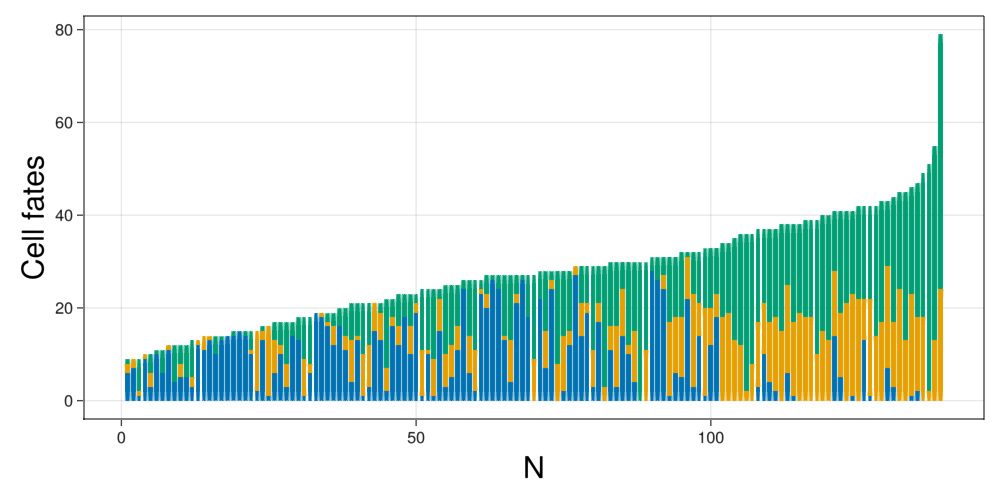
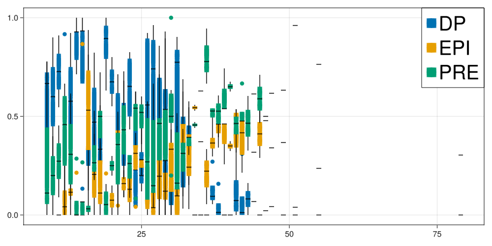

ICM Development
The model from Saiz et al. has three parts in the model
Definition of the model
Mechanics
The cells are spheroids that behave under the following equations:
\[m_i\frac{dv_i}{dt} =-bv_i+\sum_j F_{ij}\]
\[\frac{dx_i}{dt} =v_i\]
where the force is
\[F_{ij}= \begin{cases} F_0(\frac{r_{ij}}{d_{ij}}-1)(\frac{\mu r_{ij}}{d_{ij}}-1)\frac{(x_i-x_j)}{d_{ij}}\hspace{1cm}if\;d_{ij}<\mu r_{ij}\\ 0\hspace{5cm}otherwise \end{cases}\]
where $d_{ij}$ is the Euclidean distance and $r_{ij}$ is the sum of both radius.
Biochemical interaction
Each cell has a biochemical component that follows an equation of the form:
\[\frac{dx_i}{dt}=\frac{α(1+x^n_i)^m}{(1+x^n_i)^m+(1+(\langle x\rangle_i)/K)^{2m}}-x_i\]
This is similar to the above case. The only detail required is to note that the average expression can be modeled as the combination of two interacting variables. The biochemical system is activated in the interval $[t_{on},t_{off}]$.
We made explicit that the average operator can be written as two interaction parameters that are the contraction along the second index that runs over the neighbours of each cell as,
\[N_{ij}= \begin{cases} 1\hspace{1cm}d<f_{range}r_{ij}\\ 0\hspace{1cm}otherwise \end{cases}\]
\[X_{ij}= \begin{cases} x_j\hspace{1cm}d<f_{range}r_{ij}\\ 0\hspace{1cm}otherwise \end{cases}\]
\[\langle x\rangle_i=\frac{\sum_j X_{ij}}{\sum_j N_{ij}}=\frac{X_{i}}{N_{i}}\]
Growth
The cells present division. The rules for the division in this model are. Random election of a division direction over the unit sphere. The daughter cells divide equally in mass and volume and are positioned in oposite directions around the division axis centered at the parent cell. The chemical concentration is divided asymmetrically with each cell taking $1\pm\sigma_x \text{Uniform}(0,1)$ for the parent cell. A new division time is assigned to each aghter cell from a uniform distribution $\text{Uniform}(\tau_{div}(1-\sigma_{div}),\tau_{div}(1+\sigma_{div}))$.
Creation of the Agent
#Package
using CellBasedModels
#Functions for generating random distributions
using Random
using Distributions
#Package for plotting in 3D
using GLMakie
Makie.inline!(true)
using CSV
using DataFramesDefine the agent
First, we have to create an instance of an agent with all the propoerties of the agents.First, we have to create an instance of an agent with all the propoerties of the agents.
model = ABM(3,
#Inherit model mechanics
baseModelInit = [CBMModels.softSpheres3D],
#Global parameters
model = Dict(
#Chemical constants
:α=>Float64,
:K=>Float64,
:nn=>Float64,
:mm=>Float64,
#Physical constants
:fRange=>Float64,
:mi=>Float64,
:ri=>Float64,
:k0=>Float64,
#Division constants
:fAdh=>Float64,
:τDiv=>Float64,
:σDiv=>Float64,
:c0=>Float64,
:σc=>Float64,
:nCirc=>Float64,
:σNCirc=>Float64,
:fMin=>Float64,
:fMax=>Float64,
:fPrE=>Float64,
:fEPI=>Float64,
:τCirc=>Float64,
:στCirc=>Float64,
:rESC=>Float64,
:nOn=>Float64,
:cMax=>Float64
),
#Local float parameters
agent = Dict(
:c=>Float64,
:tDivision=>Float64, #Variable storing the time of division of the cell
:ci=>Float64, #Chemical activity of the neighbors
:ni=>Float64, #Number of neighbors
:tOff=>Bool, #indicate if the circuit for that cell is on or off (0,1)
:cellFate=>Int64 #Identity of the cell (1 DP, 2 EPI, 3 PRE)
),
#Chemical dynamics
agentODE = quote
ni = 0
ci = 0
@loopOverNeighbors it2 begin
dij = CBMMetrics.euclidean(x,x[it2],y,y[it2],z,z[it2])
rij = r+r[it2]
if dij < fRange*rij
ni += 1
ci += c[it2]
end
end
if tOff == false && N > nOn #Activate circuit
dt( c ) = α*(1+c^nn)^mm/((1+c^nn)^mm+(1+(ci/ni)/K)^(2*mm)) - c
end
end,
#Interaction computation
agentRule=quote
#Circuit deactivation and commitment
if c < fPrE*cMax && tOff == false && N > nOn
cellFate = 3
elseif c > fEPI*cMax && tOff == false && N > nOn
cellFate = 2
end
if c < fMin*cMax && tOff == false && N > nOn
tOff = true
elseif c > fMax*cMax && tOff == false && N > nOn
tOff = true
end
#Growth
if t > tDivision
#Choose random direction in unit sphere
xₐ = CBMDistributions.normal(0,1); yₐ = CBMDistributions.normal(0,1); zₐ = CBMDistributions.normal(0,1)
Tₐ = sqrt(xₐ^2+yₐ^2+zₐ^2)
xₐ /= Tₐ;yₐ /= Tₐ;zₐ /= Tₐ
#Chose a random distribution of the material
dist = CBMDistributions.uniform(1-σc,1+σc)
rsep = r/2
rnew = r/(2. ^(1. /3))
@addAgent( #Add new agent
x = x+rsep*xₐ,
y = y+rsep*yₐ,
z = z+rsep*zₐ,
vx = 0,
vy = 0,
vz = 0,
r = rnew,
m = m/2,
c = c*(dist),
tDivision = t + CBMDistributions.uniform(τDiv*(1-σDiv),τDiv*(1+σDiv))
)
@addAgent( #Add new agent
x = x-rsep*xₐ,
y = y-rsep*yₐ,
z = z-rsep*zₐ,
vx = 0,
vy = 0,
vz = 0,
r = rnew,
m = m/2,
c = c*(2-dist),
tDivision = t + CBMDistributions.uniform(τDiv*(1-σDiv),τDiv*(1+σDiv))
)
@removeAgent() # Remove agent that divided
end
end,
agentAlg=CBMIntegrators.Heun()
);Community construction and initialisation
Once with the model created, we have to construct an initial Community of agents to evolve.
Parameters
The model from the original version has some parameters defined. We create a dictionary with all the parameters from the model assigned.
parameters = Dict([
:α => 10,
:K => .9,
:nn => 2,
:mm => 2,
:fRange => 1.2,
:mi => 10E-6,
:ri => 5,
:b => 10E-6,
:k0 => 10E-4,
:fAdh => 1.5,
:μ => 2,
:τDiv => 10,
:σDiv => .5,
:c0 => 3,
:σc => 0.01,
:nCirc => 20,
:σNCirc => .1,
:fMin => .05,
:fMax => .95,
:fPrE => .2,
:fEPI => .8,
:τCirc => 45.,
:στCirc => .02,
:rESC => 2,
:f0 => [1 1 1;1 1 1;1 1 1]
]);Initialise the community
The model starts from just one agent. Create the community and assign all the parameters to the Community object.
function initializeEmbryo(parameters;dt)
com = Community(
model,
N=1,
dt=dt,
)
#Global parameters
for (par,val) in pairs(parameters)
com[par] = val
end
com.nOn = rand(Uniform(parameters[:nCirc]-parameters[:σNCirc],parameters[:nCirc]+parameters[:σNCirc]))
com.cMax = parameters[:α]/(1+1/(2*parameters[:K])^(2*parameters[:mm]))
#########Local parameters and variables###########
com.f0 = parameters[:k0].*parameters[:f0]# / parameters[:fAdh]
#Initialise locals
com.m = parameters[:mi]
com.r = parameters[:ri]
com.cellFate = 1 #Start neutral fate
com.tOff = false #Start with the tOff deactivated
#Initialise variables
com.x = 0.
com.y = 0.
com.z = 0.
com.vx = 0.
com.vy = 0.
com.vz = 0.
com.c = com.c0
com.tDivision = 1#rand(Uniform(com.τDiv-com.σDiv,com.τDiv+com.σDiv))
return com
end;com = initializeEmbryo(parameters,dt=0.001);Creating a custom evolve step
function customEvolve!(com,steps,saveEach)
loadToPlatform!(com,preallocateAgents = 100)
for i in 1:steps
agentStepDE!(com)
agentStepRule!(com)
update!(com)
computeNeighbors!(com)
if i % saveEach == 0
saveRAM!(com)
end
#Stop by time
if all(com.N .> 60)
break
end
#println(com.c[1:com.N])
end
bringFromPlatform!(com)
end;dt = 0.001
steps = round(Int64,50/dt)
saveEach = round(Int64,.5/dt)
com = initializeEmbryo(parameters,dt=dt);
customEvolve!(com,steps,saveEach)Visualization of results
We check how the agents starts to divide and choose a fate at late stages of the simulation.
function getFates(com)
d = getParameter(com,[:t,:cellFate])
dict = Dict()
dict["t"] = [i[1] for i in d[:t]]
dict["N"] = [length(i) for i in d[:cellFate]]
for (fateNumber, fate) in zip([1,2,3],["DP","EPI","PRE"])
dict[fate] = [sum(i.==fateNumber) for i in d[:cellFate]]
end
return dict
end;colorMap = Dict("DP"=>Makie.wong_colors()[1],"EPI"=>Makie.wong_colors()[2],"PRE"=>Makie.wong_colors()[3])
colorMapNum = Dict(1=>Makie.wong_colors()[1],2=>Makie.wong_colors()[2],3=>Makie.wong_colors()[3]);fig = Figure(resolution=(1500,300))
d = getParameter(com,[:x,:y,:z,:r,:cellFate])
for (i,pos) in enumerate([1:round(Int64,length(com)/4):length(com);length(com)])
ax = Axis3(fig[1,i],aspect = :data)
color = [colorMapNum[i] for i in d[:cellFate][pos]]
meshscatter!(ax,d[:x][pos],d[:y][pos],d[:z][pos],markersize=d[:r][pos],color=color)
xlims!(ax,-5,5)
ylims!(ax,-5,5)
zlims!(ax,-5,5)
end
display(fig)fig = Figure(resolution=(1500,600))
ax = Axis(fig[1,1],xlabel="Time",ylabel="Proportions",xlabelsize=40,ylabelsize=40)
fates = getFates(com)
offset = zeros(length(fates["N"]))
plots = []
for i in ["DP","EPI","PRE"]
prop = fates[i]./fates["N"]
p = barplot!(ax,fates["t"],prop,offset=offset,color=colorMap[i])
push!(plots,p)
offset .+= prop
end
Legend(fig[1,1], plots, ["DP","EPI","PRE"], halign = :right, valign = :top, tellheight = false, tellwidth = false, labelsize=40)
display(fig)
Make statistics of the model
This model contains stochasticity in the division times and the concentration of chemical components that the daughter agents receive. This will make different runs of the simulation to differ. In order to make statistics we run the model several times and collect information of the size and fates of the cells.
function makeStatistics(comBase,parameters,dt,steps,saveEach,nRepetitions)
#Make simulations and add results to list
d = Dict("id"=>Int64[],"N"=>Int64[],"t"=>Float64[],"DP"=>Int64[],"EPI"=>Int64[],"PRE"=>Int64[])
for i in 1:nRepetitions
#Make the simulations
com = initializeEmbryo(parameters,dt=dt);
setfield!(com,:abm,comBase.abm) #Avoid world problem assigning the functions of globally declared function model
customEvolve!(com,steps,saveEach)
#Add them to the model
fates = getFates(com)
append!(d["id"],i*ones(Int64,length(fates["N"])))
append!(d["N"],fates["N"])
append!(d["t"],fates["t"])
append!(d["DP"],fates["DP"])
append!(d["EPI"],fates["EPI"])
append!(d["PRE"],fates["PRE"])
end
return d
end;dt = 0.001
steps = round(Int64,50/dt)
saveEach = round(Int64,1/dt)
nRepetitions = 5
prop = makeStatistics(com,parameters,dt,steps,saveEach,nRepetitions);fig = Figure(resolution=(1000,800))
ax = Axis(fig[1,1],xlabel="N",xlabelsize=40,ylabel="proportions",ylabelsize=40)
for i in ["DP","EPI","PRE"]
boxplot!(ax,prop["N"],prop[i]./prop["N"],color=colorMap[i])
end
Legend(fig[1,1], plots, ["DP","EPI","PRE"], halign = :right, valign = :top, tellheight = false, tellwidth = false, labelsize=40)
ax = Axis(fig[2,1],xlabel="t",xlabelsize=40,ylabel="proportions",ylabelsize=40)
for i in ["DP","EPI","PRE"]
boxplot!(ax,prop["t"],prop[i]./prop["N"],color=colorMap[i])
end
Legend(fig[2,1], plots, ["DP","EPI","PRE"], halign = :right, valign = :top, tellheight = false, tellwidth = false, labelsize=40)
display(fig)
Fitting the model
The parameters above described were chosen to match the experimental observation. This was a qualitative fitting where the parameters where tuned by hand.
In this section we will show how we can use tuning functions to choose optimize certain parameters of the model. In particular, we tune the model to fit parameters related with the chemical circuit to match the correct distributions of cells.
Upload experimental data
We upload the experimental data that gives raise to this model.
dataFull = CSV.read("data/development.csv",DataFrame)
fates = ["DP","EPI","PRE"];data = Dict("N"=>Float64[],[i=>Float64[] for i in ["DP","EPI","PRE"]]...)
for embryo in unique(dataFull[!,"Embryo_ID"])
embryoData = dataFull[dataFull[!,"Embryo_ID"] .== embryo,:]
push!(data["N"], 0)
for celltype in fates
if celltype in embryoData[!,"Identity.hc"] && celltype in ["DP","EPI","PRE"]
val = embryoData[embryoData[!,"Identity.hc"].==celltype,"count"][1]
push!(data[celltype],val)
data["N"][end] += val
elseif celltype in ["DP","EPI","PRE"]
push!(data[celltype],0)
end
end
endfig = Figure(resolution=(1000,500))
ax = Axis(fig[1,1],xlabel="N",xlabelsize=30,ylabel="Cell fates",ylabelsize=30)
offset = zeros(size(data["DP"])[1])
legend = []
order = sortperm(data["N"])
for cellId in fates
bp = barplot!(ax,data[cellId][order], offset=offset, color = colorMap[cellId])
push!(legend,bp)
offset .+= data[cellId][order]
end
fig
We see that the data corresponds to sets ranging from 5 to 60 cells, being the usual sized between 5 to 30.
fig = Figure(resolution=(1000,500))
ax = Axis(fig[1,1])
legend = []
cluster = 1
for cellId in fates
Ngrouped = round.(Int64,data["N"]/cluster).*cluster
l = boxplot!(ax,Ngrouped,(data[cellId]./data["N"]),label=cellId, color=colorMap[cellId])
push!(legend,l)
end
Legend(fig[1,1], legend, fates, halign = :right, valign = :top, tellheight = false, tellwidth = false, labelsize=40)
fig
Set the exploration space
The optimization algorithms require that you specify a set of parameters to optimize. in our case, our parameters correspond to parameters to the agent. However, they does not need to correcpond to parameters of the agent at all. They will be specified for the algorithm to sample from them and give new updates while optimising.
We have to define them as a dicctionary.
explore = Dict([
:α=>(0,20),
:K=>(0,2),
:nn=>(0,5),
:mm=>(0,5),
:nCirc=>(0,30),
:σNCirc=>(0,20),
:c0=>(0,20)
]);Construct loos function
With the data prepared to be compared, we set the loos function.
The loos function is a function that has to receive at least one argument, a RowDataframe object that contains the information of the parameters that are being fitted and has to return a value indicating how good wwere the simulations.
The function is very general so it can fit a many different routines.
Our function basically contains the following steps:
- Sets the new parameters
- Run several simulations for that set of parameters to get robust statistics
- Cluster the results from the simulations as before to compare it to the experimental data
- Compare the experimental and simulation results using a Chi Square metric as loos value.
The specific form of the function will depend on the optimization algorithm at hand.
function loosFunction(params;parameters=parameters,data=data,nRepetitions=1,saveEach=10,dt=0.001)
#Modify the set of parameters
parametersModified = copy(parameters)
parametersModified[:α] = params[:α][1]
parametersModified[:K] = params[:K][1]
parametersModified[:nn] = params[:nn][1]
parametersModified[:mm] = params[:mm][1]
parametersModified[:nCirc] = params[:nCirc][1]
parametersModified[:σNCirc] = params[:σNCirc][1]
parametersModified[:c0] = params[:c0][1]
#Make a batch of simulations and get relevant information
prop = makeStatistics(com,parametersModified,dt,steps,saveEach,nRepetitions);
#Prepare data for fitting
p = transpose([prop["DP"] prop["EPI"] prop["PRE"]]./prop["N"])
#Xi square loos
loos = 0.
for n in minimum(data["N"]):maximum(data["N"])
p = prop["N"] .== n
if sum(p) > 0
dist = [mean(prop["DP"][p])/n,mean(prop["EPI"][p])/n,mean(prop["PRE"][p])/n]
for (nn,dp,epi,pre) in zip(data["N"],data["DP"],data["EPI"],data["PRE"])
if nn == n
loos += sum((dist.-[dp,epi,pre]./n).^2)
end
end
end
end
#Return loos
return loos
endloosFunction (generic function with 1 method)Check stability of loos function
We run the loos function several times to check that the results are consistent between runs. If the loos function returned different results outside the expected fluctuations, the model would not be proporly fitted as the algorithms would not be able to minimize consistently the cost.
The fluctuations for the simulations using 10 repetitions of the simulation for the same parameters show already enough consistency.
initialisation = DataFrame([:α=>parameters[:α],:K=>parameters[:K],:nn=>parameters[:nn],:mm=>parameters[:mm],:nCirc=>parameters[:nCirc],:σNCirc=>parameters[:σNCirc],:c0=>parameters[:c0]])
Threads.@threads for i in 1:3
println(loosFunction(initialisation,nRepetitions=1))
end43.66465425385882
40.19961640416682
39.79395560531394#CBMFitting.swarmAlgorithm(loosFunction,explore,population=10,stopMaxGenerations=10,saveFileName="Optimization",verbose=true)[32mGeneration 1/10 100%|████████████████████████████████████| Time: 0:06:33[39m
[32mGeneration 2/10 100%|████████████████████████████████████| Time: 0:06:18[39m
[32mGeneration 3/10 100%|████████████████████████████████████| Time: 0:06:29[39m
[32mGeneration 4/10 100%|████████████████████████████████████| Time: 0:06:22[39m
[32mGeneration 5/10 100%|████████████████████████████████████| Time: 0:06:28[39m
[32mGeneration 6/10 100%|████████████████████████████████████| Time: 0:06:35[39m
[32mGeneration 7/10 100%|████████████████████████████████████| Time: 0:06:20[39m
[32mGeneration 8/10 100%|████████████████████████████████████| Time: 0:06:27[39m
[32mGeneration 9/10 100%|████████████████████████████████████| Time: 0:06:41[39m
[32mGeneration 10/10 100%|███████████████████████████████████| Time: 0:06:25[39m<div><div style = "float: left;"><span>DataFrameRow (16 columns)</span></div><div style = "clear: both;"></div></div><div class = "data-frame" style = "overflow-x: scroll;"><table class = "data-frame" style = "margin-bottom: 6px;"><thead><tr class = "header"><th class = "rowLabel" style = "font-weight: bold; text-align: right;">Row</th><th style = "text-align: left;">α</th><th style = "text-align: left;">nn</th><th style = "text-align: left;">K</th><th style = "text-align: left;">mm</th><th style = "text-align: left;">nCirc</th><th style = "text-align: left;">σNCirc</th><th style = "text-align: left;">c0</th><th style = "text-align: left;">αvelocity</th><th style = "text-align: left;">nnvelocity</th><th style = "text-align: left;">Kvelocity</th><th style = "text-align: left;">mmvelocity</th><th style = "text-align: left;">nCircvelocity</th><th style = "text-align: left;">σNCircvelocity</th><th style = "text-align: left;">c0velocity</th><th style = "text-align: left;">score</th><th style = "text-align: left;">generation</th></tr><tr class = "subheader headerLastRow"><th class = "rowLabel" style = "font-weight: bold; text-align: right;"></th><th title = "Float64" style = "text-align: left;">Float64</th><th title = "Float64" style = "text-align: left;">Float64</th><th title = "Float64" style = "text-align: left;">Float64</th><th title = "Float64" style = "text-align: left;">Float64</th><th title = "Float64" style = "text-align: left;">Float64</th><th title = "Float64" style = "text-align: left;">Float64</th><th title = "Float64" style = "text-align: left;">Float64</th><th title = "Float64" style = "text-align: left;">Float64</th><th title = "Float64" style = "text-align: left;">Float64</th><th title = "Float64" style = "text-align: left;">Float64</th><th title = "Float64" style = "text-align: left;">Float64</th><th title = "Float64" style = "text-align: left;">Float64</th><th title = "Float64" style = "text-align: left;">Float64</th><th title = "Float64" style = "text-align: left;">Float64</th><th title = "Float64" style = "text-align: left;">Float64</th><th title = "Int64" style = "text-align: left;">Int64</th></tr></thead><tbody><tr><td class = "rowLabel" style = "font-weight: bold; text-align: right;">93</td><td style = "text-align: right;">14.9389</td><td style = "text-align: right;">1.95144</td><td style = "text-align: right;">1.39619</td><td style = "text-align: right;">1.42773</td><td style = "text-align: right;">12.3225</td><td style = "text-align: right;">9.68273</td><td style = "text-align: right;">9.7174</td><td style = "text-align: right;">-0.0968626</td><td style = "text-align: right;">-0.0562549</td><td style = "text-align: right;">-0.0105383</td><td style = "text-align: right;">0.047756</td><td style = "text-align: right;">0.0882151</td><td style = "text-align: right;">0.278174</td><td style = "text-align: right;">0.0248736</td><td style = "text-align: right;">45.7751</td><td style = "text-align: right;">10</td></tr></tbody></table></div>
optimization = CSV.read("Optimization.csv",DataFrame);fig = Figure()
ax = Axis(fig[1,1],xticks=1:10,xlabel="Generations",xlabelsize=30,ylabel="Log loos",ylabelsize=30)
scatter!(ax,optimization._generation_.+rand(Uniform(-.2,.2),length(optimization._generation_)),(optimization._score_))
#xticks!(ax,[1,2,3],[1,2,3])
display(fig)
propQualitative = makeStatistics(com,parameters,dt,steps,saveEach,nRepetitions);params = optimization[argmin(optimization[!,"_score_"]),:]
parametersModified = copy(parameters)
parametersModified[:α] = params[:α][1]
parametersModified[:K] = params[:K][1]
parametersModified[:nn] = params[:nn][1]
parametersModified[:mm] = params[:mm][1]
parametersModified[:nCirc] = params[:nCirc][1]
parametersModified[:σNCirc] = params[:σNCirc][1]
parametersModified[:c0] = params[:c0][1]
propFitted = makeStatistics(com,parametersModified,dt,steps,saveEach,10);cluster = 4
dt = 0.001
steps = round(Int64,50/dt)
saveEach = round(Int64,1/dt)
nRepetitions = 5
fig = Figure(resolution=(1500,300))
#Real
ax = Axis(fig[1,1])
legend = []
for cellId in fates
Ngrouped = round.(Int64,data["N"]/cluster).*cluster
l = boxplot!(ax,Ngrouped,(data[cellId]./data["N"]),label=cellId, color=colorMap[cellId])
push!(legend,l)
end
xlims!(0,50)
Legend(fig[1,1], legend, fates, halign = :right, valign = :top, tellheight = false, tellwidth = false, labelsize=20)
#Original fit
ax = Axis(fig[1,2],xlabel="N",xlabelsize=40,ylabel="proportions",ylabelsize=40)
legend = []
for i in ["DP","EPI","PRE"]
Ngrouped = round.(Int64,propQualitative["N"]/cluster).*cluster
l = boxplot!(ax,Ngrouped,propQualitative[i]./propQualitative["N"],color=colorMap[i])
push!(legend,l)
end
xlims!(0,50)
Legend(fig[1,2], legend, ["DP","EPI","PRE"], halign = :right, valign = :top, tellheight = false, tellwidth = false, labelsize=20)
#Swarm fit
ax = Axis(fig[1,3],xlabel="N",xlabelsize=40,ylabel="proportions",ylabelsize=40)
legend = []
for i in ["DP","EPI","PRE"]
Ngrouped = round.(Int64,propFitted["N"]/cluster).*cluster
l = boxplot!(ax,Ngrouped,propFitted[i]./propFitted["N"],color=colorMap[i])
push!(legend,l)
end
xlims!(0,50)
Legend(fig[1,3], legend, ["DP","EPI","PRE"], halign = :right, valign = :top, tellheight = false, tellwidth = false, labelsize=20)
display(fig)